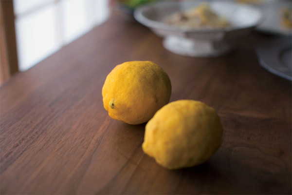
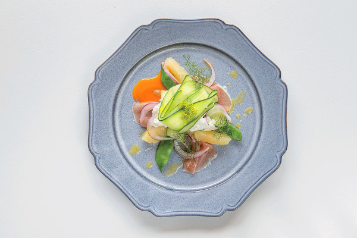
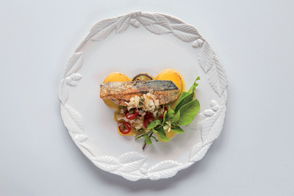
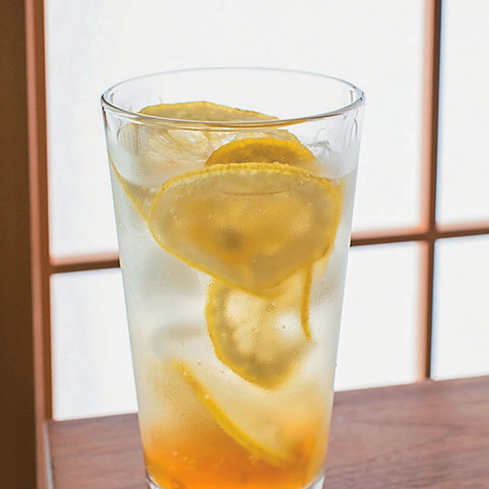

Старый крестьянский дом посреди лимонного сада на острове Тэсима: агентство «Смайлз» Масамити Тоямы превратило его в произведение искусства, открытое для ночлега

Сэтоути давно стало синонимом арт-путешествия: раз в три года здесь проходит Международный фестиваль искусств, и ради работ художников под открытым небом на острова Внутреннего моря съезжаются со всего мира. Рядом со знаменитой Наосимой всё громче заявляет о себе Тэсима: новые произведения появляются одно за другим, и остров уверенно входит в карту «островов искусства». Среди них «Лимонный отель»: редкий случай, когда искусство можно не только посмотреть, но и переночевать в нём.
Отель стоит на тихом холме в стороне от деревни: старый крестьянский дом посреди лимонного сада. Произведение создало агентство «Смайлз» Масамити Тоямы, основателя «Soup Stock Tokyo» и «Pass the Baton». За дверью старинного дома гостя ждёт лимонно-жёлтый мир с кисло-сладкими акцентами: лимон здесь не приправа, а главный герой. Кухня здесь, как и всё в отеле, является частью произведения; постояльцам достаётся ужин, в котором лимоны Тэсимы играют первую скрипку.
Дом и сад сдаются целиком одной компании за ночь: от двух до пяти человек, одна японская комната, общий ночлег под одной крышей. Сад лимонов площадью 400 цубо (около 1 320 кв. м) тоже остаётся в единоличном пользовании. В отдельном лимонном домике прячется открытая ванна под кроной лимонного дерева, а ясными вечерами с веранды энгава видно звёздное небо.
Лимоны, которыми славится Тэсима, растут почти без пестицидов, поэтому их можно есть целиком: с соком, мякотью и кожурой. Отсюда и ужин, в котором лимон раскрывается по-всякому.

Блюда выносят по одному, от закусок до десерта: одни берут ароматом, другие выходят на первый план. Например, закуска представляет собой лимонную мякоть, маринованную целиком: стоит соединить её с яйцом пашот, и кислинка сразу смягчается. Лимон, который в обычной кухне остаётся статистом на вторых ролях, здесь раскрывается целиком: сок, упругая мякоть, ароматная кожура.

Главное блюдо готовят из рыбы, пойманной в этот день в море Сэтоути: она идёт в самом выигрышном исполнении, а к столу подают домашнее лимонное оливковое масло.
Если переночевать не удалось, фирменный лимонный сквош с щедрыми кольцами лимона всё равно можно попробовать: 500 иен с налогом. Шипучий, кисло-сладкий, с долгим послевкусием.
